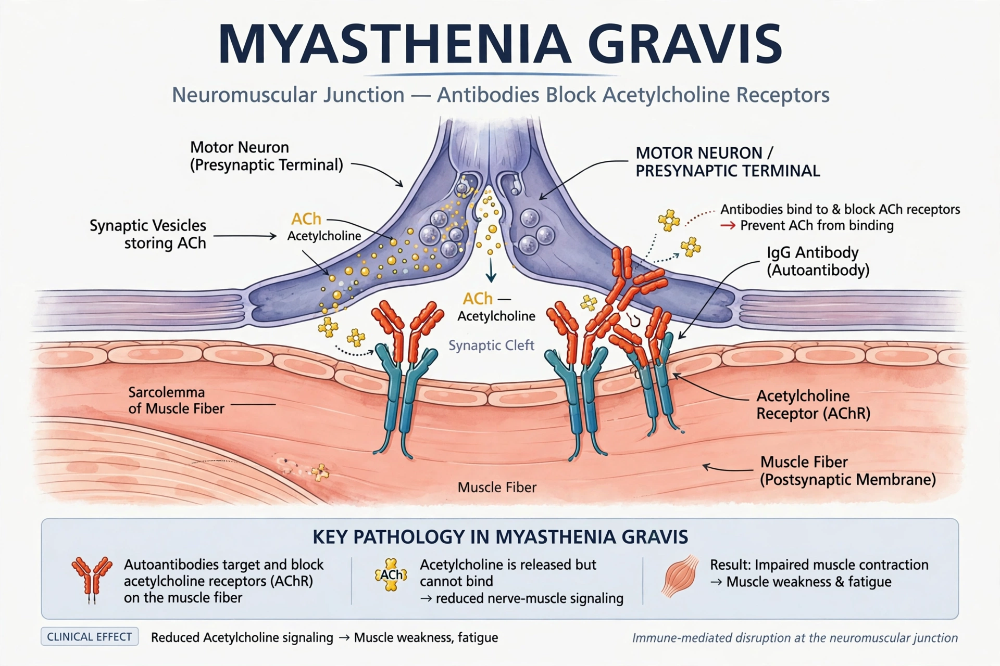

Myasthenia gravis (MG) is a long-term neuromuscular autoimmune disease that leads to varying degrees of skeletal muscle weakness. The most commonly affected muscles are those of the eyes, face and swallowing. It can result in double vision, drooping eyelids, trouble talking and trouble walking. Onset can be sudden; a myasthenic crisis may cause respiratory failure requiring ventilation.

| Specialty | Neurology |
|---|---|
| Symptoms | Muscle weakness worsening with activity, ptosis, diplopia, dysarthria, dysphagia |
| Causes | Autoantibodies against acetylcholine receptors (or MuSK/LRP4) |
| Treatment | Acetylcholinesterase inhibitors (pyridostigmine), immunosuppressants, thymectomy, plasmapheresis, IVIG |
MG is caused by autoantibodies that block, alter or destroy nicotinic acetylcholine receptors at the neuromuscular junction, preventing muscle contraction. Antibodies to MuSK or LRP4 occur in some seronegative cases. The thymus is often abnormal, with hyperplasia or thymoma, and may play a role in antibody production.
Diagnosis combines clinical fatigability testing, antibody assays, repetitive nerve stimulation and single-fibre electromyography, and imaging of the thymus. The ice-pack test may help in ptosis.
Pyridostigmine improves symptoms; immunosuppressants such as prednisone, azathioprine and newer complement inhibitors (eculizumab, ravulizumab) and FcRn antagonists (efgartigimod) are used in generalised disease. Thymectomy benefits many patients. With modern treatment, life expectancy is near normal, though disease severity varies widely.